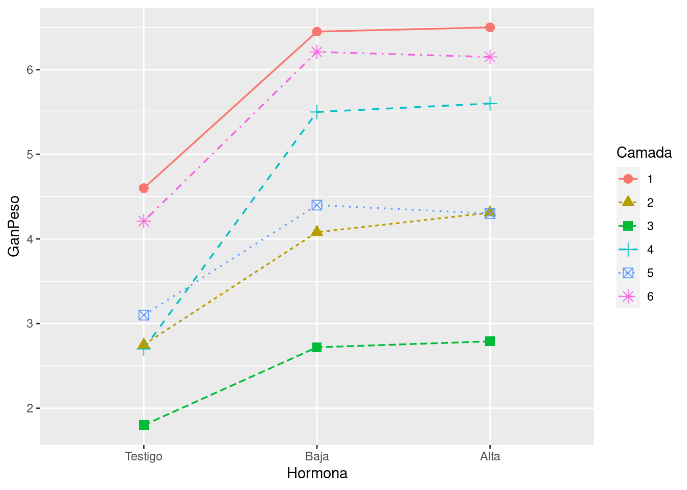
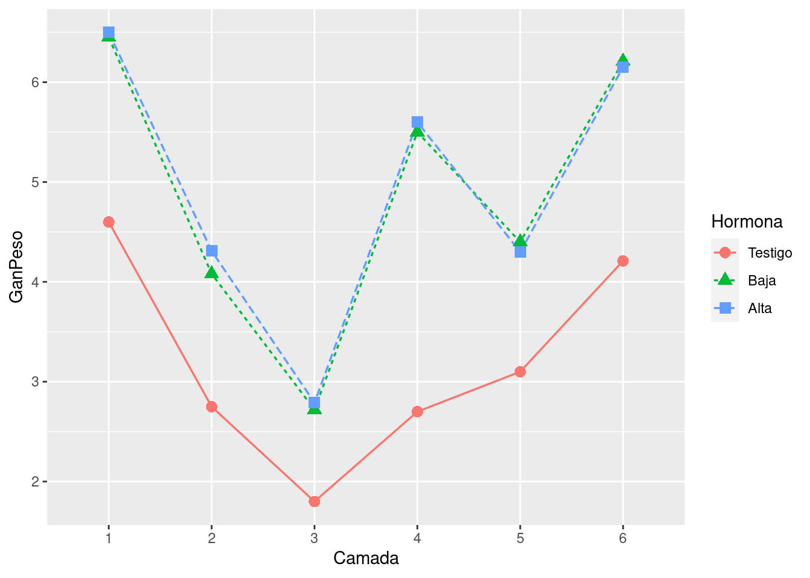
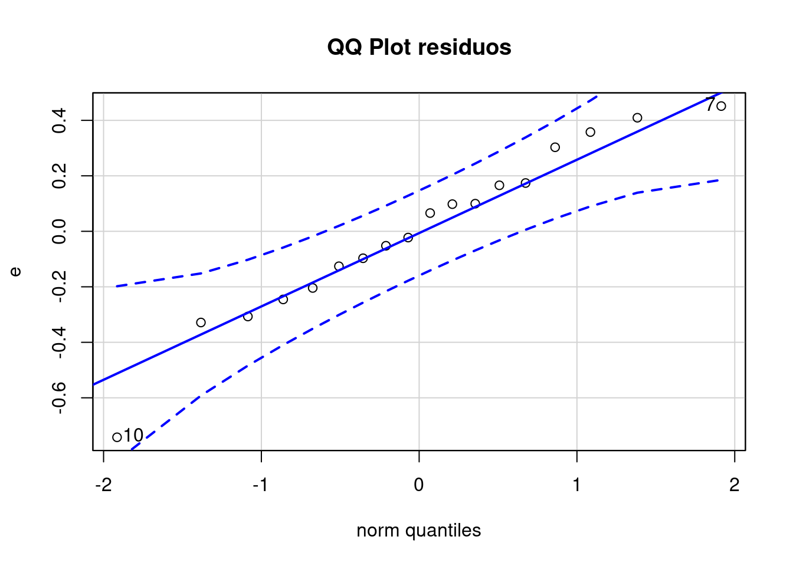

3 Resolución
data <- read.csv("Hormona.txt", sep = "\t")
data$Camada <- factor(data$Camada)
data$Hormona <- factor(data$Hormona,levels = c("Testigo", "Baja", "Alta"))
str(data)## 'data.frame': 18 obs. of 3 variables:
## $ Camada : Factor w/ 6 levels "1","2","3","4",..: 1 1 1 2 2 2 3 3 3 4 ...
## $ Hormona: Factor w/ 3 levels "Testigo","Baja",..: 1 2 3 1 2 3 1 2 3 1 ...
## $ GanPeso: num 4.6 6.45 6.5 2.75 4.08 4.31 1.8 2.72 2.79 2.7 ...Identifique la variable respuesta, los factores y sus niveles y su condición de fijos o aleatorios, cruzados o anidados, justificando su respuesta.
- VR: GanPeso con valores entre 1.8 y 6.5 medida en gr
- Factores:
- Hormona:
- niveles: Testigo, Baja, Alta
- variable de efecto fijo
- Camada
- niveles: 1, 2, 3, 4, 5, 6
- variable de efecto aleatorio
- Hormona:
Indique el modelo estadístico utilizado, en términos teóricos y aplicado a este experimento.
- Variable respuesta:
GanPeso - Variables explicativas:
HormonayCamada
Buscamos un modelo que explique la Ganancia del peso en función de la cantidad de Hormona suminstrada y tenemos en cuenta que puede haber variaciones en las camadas.
Por lo que usaremos el modelo: \[ GanPeso_{i,j} = \beta_0 + \beta_1 Hormona_{Baja} + \beta_2 Hormona_{Alta} + B_j + \varepsilon_{i,j} \]
Con \(i\) = 1 a 3 y \(j\) = 1 a 6.\[ \varepsilon \approx NID(0, \sigma^2) \]
\[ B_j \approx NID(0, \sigma^2_{camada}) \]
- Variable respuesta:
Describa gráfica y estadísticamente los resultados. Realice un gráfico de perfiles para estudiar el paralelismo entre bloques. ¿Qué significa “paralelismo” en el contexto de este ensayo? ¿Qué piensa que ocurriría si los bloques respondieran de forma “No-paralela”?
m <- lm(GanPeso ~ Hormona + Camada, data = data)
summary(m)##
## Call:
## lm(formula = GanPeso ~ Hormona + Camada, data = data)
##
## Residuals:
## Min 1Q Median 3Q Max
## -0.75056 -0.17889 0.01278 0.17361 0.51278
##
## Coefficients:
## Estimate Std. Error t value Pr(>|t|)
## (Intercept) 4.7006 0.2609 18.016 5.94e-09 ***
## HormonaBaja 1.7000 0.2260 7.524 2.01e-05 ***
## HormonaAlta 1.7483 0.2260 7.738 1.58e-05 ***
## Camada2 -2.1367 0.3195 -6.687 5.46e-05 ***
## Camada3 -3.4133 0.3195 -10.682 8.66e-07 ***
## Camada4 -1.2500 0.3195 -3.912 0.002905 **
## Camada5 -1.9167 0.3195 -5.998 0.000132 ***
## Camada6 -0.3267 0.3195 -1.022 0.330742
## ---
## Signif. codes: 0 '***' 0.001 '**' 0.01 '*' 0.05 '.' 0.1 ' ' 1
##
## Residual standard error: 0.3914 on 10 degrees of freedom
## Multiple R-squared: 0.9588, Adjusted R-squared: 0.93
## F-statistic: 33.28 on 7 and 10 DF, p-value: 3.808e-06anova(m)## Analysis of Variance Table
##
## Response: GanPeso
## Df Sum Sq Mean Sq F value Pr(>F)
## Hormona 2 11.8980 5.9490 38.840 1.930e-05 ***
## Camada 5 23.7861 4.7572 31.059 8.796e-06 ***
## Residuals 10 1.5317 0.1532
## ---
## Signif. codes: 0 '***' 0.001 '**' 0.01 '*' 0.05 '.' 0.1 ' ' 1(medias.Datos<-aggregate(GanPeso~Hormona+Camada, data,mean))## Hormona Camada GanPeso
## 1 Testigo 1 4.60
## 2 Baja 1 6.45
## 3 Alta 1 6.50
## 4 Testigo 2 2.75
## 5 Baja 2 4.08
## 6 Alta 2 4.31
## 7 Testigo 3 1.80
## 8 Baja 3 2.72
## 9 Alta 3 2.79
## 10 Testigo 4 2.70
## 11 Baja 4 5.50
## 12 Alta 4 5.60
## 13 Testigo 5 3.10
## 14 Baja 5 4.40
## 15 Alta 5 4.30
## 16 Testigo 6 4.21
## 17 Baja 6 6.21
## 18 Alta 6 6.15# Opcion grafica 1
gp <- ggplot(medias.Datos, aes(x=Hormona, y=GanPeso, colour=Camada, group=Camada))
gp + geom_line(aes(linetype=Camada), size=.6) +geom_point(aes(shape=Camada), size=3)
# Opcion grafica 2
gp1 <- ggplot(medias.Datos, aes(x=Camada, y=GanPeso, colour=Hormona, group=Hormona))
gp1 + geom_line(aes(linetype=Hormona), size=.6) +geom_point(aes(shape=Hormona), size=3)
El paralelismo (que no existe) estaría apuntando a que no hay interacción entre los 2 factores. Igualmente en este caso, nos gustaría que el modelo pueda ser generalizado a cualquier camada, con lo cual pasaremos de tener la camada como factor a tenerla como efecto aleatorio.
m2 <-lmer(GanPeso ~ Hormona + (1 | Camada), data = data)
summary(m2)## Linear mixed model fit by REML. t-tests use Satterthwaite's method ['lmerModLmerTest']
## Formula: GanPeso ~ Hormona + (1 | Camada)
## Data: data
##
## REML criterion at convergence: 37
##
## Scaled residuals:
## Min 1Q Median 3Q Max
## -1.89663 -0.47165 0.05532 0.43962 1.15342
##
## Random effects:
## Groups Name Variance Std.Dev.
## Camada (Intercept) 1.5347 1.2388
## Residual 0.1532 0.3914
## Number of obs: 18, groups: Camada, 6
##
## Fixed effects:
## Estimate Std. Error df t value Pr(>|t|)
## (Intercept) 3.1933 0.5304 5.6529 6.021 0.00118 **
## HormonaBaja 1.7000 0.2260 10.0000 7.524 2.01e-05 ***
## HormonaAlta 1.7483 0.2260 10.0000 7.738 1.58e-05 ***
## ---
## Signif. codes: 0 '***' 0.001 '**' 0.01 '*' 0.05 '.' 0.1 ' ' 1
##
## Correlation of Fixed Effects:
## (Intr) HrmnBj
## HormonaBaja -0.213
## HormonaAlta -0.213 0.500Verifique los supuestos del modelo.
Vamos a verificar los supuestos:
- Residuos
e<-resid(m2) # residuos
# re<-rstandard(m2) #residuos estandarizados
# pre<-predict(m2) #predichos
# res<-cbind(data$Camada, Datos$Hormona, data$GanPeso,pre,e,round(re,3))
# colnames(res)<-c("provincia", "densidad", "aceite", "Predichos", "Residuos", "residuos std") # agregamos los "Column Names"
# res
# #Supuestos
# # Graficos diagnosticos
# par(mfrow = c(1, 2))
# # Residuos est vs valores predichos
# plot(pre, re, xlab="Predichos", ylab="Residuos estandarizados",main="Gr?fico de dispersi?n de RE vs PRED" )
# abline(0,0)
# qqplot
qqPlot(e, main = "QQ Plot residuos")
## [1] 10 7 Prueba de Shapiro y Levene
# prueba de shapiro
shapiro.test(e)##
## Shapiro-Wilk normality test
##
## data: e
## W = 0.9631, p-value = 0.6623 No tenemos evidencia para decir que los residuos no tienen provienen de una distribución normal. Es decir, tenemos homocedasticidad.- Plantee las hipótesis. Resuelva y concluya, asumiendo un nivel de significación del 5%.
- Efectue las comparaciones pertinentes y concluya. Represente gráficamente los resultados.
- Resuelva el ejercicio incluyendo “Camadas” como factor fijo. Compare y concluya. ¿Considera que fue efectivo bloquear? Justifique.